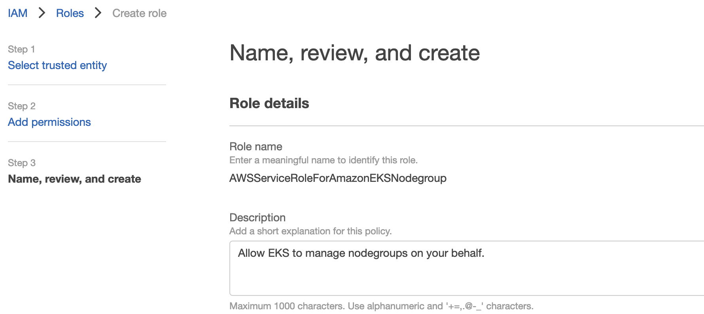
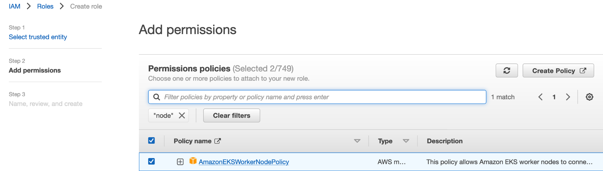
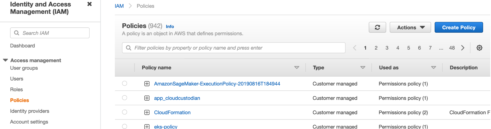
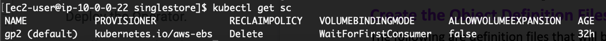

Deploy SingleStore DB in Amazon Elastic Kubernetes Service (EKS)
Introduction
Use these steps to deploy SingleStore DB in Amazon Elastic Kubernetes Service (EKS)
Summary
SingleStore’s Cluster Management in kubernetes is different from native deployment. All jobs related to cluster management are done by operators.
User prohibited to use below command or tools:
-
SingleStore DB Toolbox except sdb-report
a. sdb-toolbox-config. Performs host machine registration.
b. sdb-deploy. Installs memsqlctl and the SingleStore DB database engine to host machines in the cluster.
c. sdb-admin. Helps you manage a SingleStore DB cluster.
d. sdb-report. Collects and performs diagnostic checks on your cluster.
e. memsqlctl. Provides lower-level access to manage nodes on a host machine.
EKS Cluster
Prerequisite
Role
Create two roles
Cluster IAM Role
Reference: https://docs.aws.amazon.com/eks/latest/userguide/service_IAM_role.html
-
Open the IAM console at https://console.aws.amazon.com/iam/
-
In the left navigation pane, choose Roles.
-
Search the list of roles for eksClusterRole. If a role that includes eksClusterRole doesn't exist, then continue the next step to create the role else skip the rest of steps.
-
Click Create role

-
Select trusted entity
-
Select AWS service
-
Select EKS - Cluster as Use cases

-
Add permissions

-
Name, review, and create

Reference: https://docs.aws.amazon.com/eks/latest/userguide/security-iam-awsmanpol.html
Assign all *EKS* managed policy to the role

Service IAM Role
-
Open the IAM console at https://console.aws.amazon.com/iam/
-
In the left navigation pane, choose Roles.
-
Search the list of roles for AWSServiceRoleForAmazonEKSNodegroup. If a role that includes AWSServiceRoleForAmazonEKSNodegroup doesn't exist, then continue the next step to create the role else skip the rest of steps.
-
Click Create role
-
Select trusted entity
-
Select AWS service
-
Select EKS - Nodegroup as Use cases

-
Add permissions
-
Name, review, and create

Node IAM Role
Reference: https://docs.aws.amazon.com/eks/latest/userguide/create-node-role.html
-
Open the IAM console at https://console.aws.amazon.com/iam/
-
In the left navigation pane, choose Roles.
-
Search the list of roles for AmazonEKSNodeRole. If a role that includes AWSServiceRoleForAmazonEKS doesn't exist, then continue the next step to create the role else skip the rest of steps.
-
Click Create role
-
Select trusted entity
-
Select AWS service
-
Select EC2 as Use cases

-
Add permissions, select AmazonEKSWorkerNodePolicy and AmazonEC2ContainerRegistryReadOnly

-
Name, review, and create

Policy
-
Open the IAM console at https://console.aws.amazon.com/iam/
-
In the left navigation pane, choose Policies.
-
Click Create Policy.

-
Copy the following aws permission on JSON tab

{
"Version": "2012-10-17",
"Statement": [
{
"Sid": "VisualEditor0",
"Effect": "Allow",
"Action": [
"iam:ListRoles",
"ec2:DescribeSubnets",
"eks:CreateCluster"
],
"Resource": "*"
},
{
"Sid": "VisualEditor1",
"Effect": "Allow",
"Action": [
"eks:DeleteCluster",
"iam:GetRole",
"iam:PassRole",
"iam:ListAttachedRolePolicies",
"eks:DeleteNodegroup",
"eks:TagResource",
"eks:DescribeCluster",
"eks:CreateNodegroup"
],
"Resource": [
"arn:aws:iam::[account-id]:role/AmazonEKSNodeRole",
"arn:aws:iam::[account-id]:role/eksClusterRole",
"arn:aws:iam::[account-id]:role/*AWSServiceRoleForAmazonEKSNodegroup",
"arn:aws:eks:us-east-1:[account-id]:nodegroup/eks-cluster/*/*",
"arn:aws:eks:us-east-1:[account-id]:cluster/eks-cluster"
]
}
]
}
-
Review policy, put name eks-policy

User
Create user service
-
Open the IAM console at https://console.aws.amazon.com/iam/
-
In the left navigation pane, choose Users.
-
Set user details
-
Select Access key - Programmatic access only

-
Add permission
-
Choose Attach existing policies directly. Attach eks-policy to users.

Create the Cluster
Reference: https://docs.aws.amazon.com/eks/latest/userguide/create-cluster.html#aws-cli
- Define
region-code
cluster-name
account_id
subnetId
- Create cluster
Use comma as delimiter if you have more than one subnet
Create your cluster with the following command:
aws eks create-cluster \
--region region-code \
--name cluster-name \
--kubernetes-version 1.21 \
--role-arn arn:aws:iam::[account-id]:role/eksClusterRole \
--resources-vpc-config subnetIds=subnetId1,subnetId2

This process may take several minutes.
Access the Cluster
Connect kubectl
aws eks update-kubeconfig --region us-east-1 --name eks-cluster
Verify
kubectl get node -owide
{width=”6.267716535433071in” height=”0.4722222222222222in”}
Delete VPC CNI
Reference: https://docs.cilium.io/en/v1.9/gettingstarted/k8s-install-eks/
Cilium will manage ENIs instead of VPC CNI, so the aws-node DaemonSet has to be deleted to prevent conflict behavior.
kubectl -n kube-system delete daemonset aws-node

Wait the cluster creation complete if you above result

You can continue to the next step using kubectl command
Deploy Cilium as CNI
Reference: https://docs.cilium.io/en/v1.9/gettingstarted/k8s-install-eks/#deploy-cilium
Setup Helm repository:
helm repo add cilium https://helm.cilium.io/
This helm command sets eni=true and tunnel=disabled, meaning the Cilium will allocate a fully-routable AWS ENI IP address for each pod, similar to the behavior of the Amazon VPC CNI plugin.
Excluding the lines for eni=true, ipam.mode=eni and tunnel=disabled from the helm command will configure Cilium to use overlay routing mode. Ensure the pod CIDR (ipam.operator.clusterPoolIPv4PodCIDR) is not overlapping with node CIDR.
Deploy Cilium release via Helm:
helm install cilium cilium/cilium --version 1.9.13 \
--namespace kube-system \
--set eni=true \
--set ipam.mode=eni \
--set egressMasqueradeInterfaces=eth0 \
--set tunnel=disabled \
--set nodeinit.enabled=true
Create the Node Group
Reference: https://docs.aws.amazon.com/eks/latest/userguide/create-cluster.html#aws-cli
- Define
region-code
cluster-name
account_id
subnetId
- Create node group
Use space as delimiter if you have more than one subnet
Create node group with the following command:
aws eks create-nodegroup \
--cluster-name cluster-name \
--region region-code \
--nodegroup-name ng-1 \
--scaling-config minSize=1,maxSize=2,desiredSize=1 \
--instance-types t2.large \
--subnets subnetId1 subnetId2 \
--node-role arn:aws:iam::[accountId]:role/AmazonEKSNodeRole

This process may take several minutes.
Verification
- Ensure the node’s status is Ready and all pod’s status Running.
kubectl get nodes
kubectl get po -A

- In cilium operator logs show Initialization complete
kubectl logs [cilium-operator-pod-name] -nkube-system --tail 10

SingleStore
Cluster Admin Prerequisites
-
Determine the project (namespace) in which to deploy SingleStore DB.
- Determine which StorageClass (SC) to use.
Avoid using a StorageClass with an NFS-based provisioner. Ideally, you should choose a StorageClass that uses a block storage-based provisioner that supports volume expansion and the WaitForFirstConsumer binding mode.
Available SC in EKS:

- Determine the fsGroup to use for the deployment.
Deployment Prerequisites
-
Obtain a SingleStore license from the SingleStore Customer Portal.
-
Select the SingleStore DB images to use. Two Docker images are required for the deployment.
a. The node image is the SingleStore DB database engine and can be found on Docker Hub.
b. The Operator image is used to manage the SingleStore DB engine deployment in Kubernetes environment, and can also be found on Docker Hub.
-
Use the StorageClass that you selected in Cluster Admin Prerequisites.
-
Substitute the fsGroup value with the value you copied in Cluster Admin Prerequisites.
Create the Object Definition Files
The following are definition files that will be used by the Operator to create your cluster. Create new definition files and copy and paste the contents of each code block into those files.
###
MemSQL Operator
For --cluster-id, enter the name of your cluster. This will be the name used in the memsql-cluster.yaml file as per:
metadata:
name: memsql-cluster
Create a deployment definition file using the template below.
cat > deployment.yaml <<EOF
apiVersion: apps/v1
kind: Deployment
metadata:
name: memsql-operator
spec:
replicas: 1
selector:
matchLabels:
name: memsql-operator
template:
metadata:
labels:
name: memsql-operator
spec:
serviceAccountName: memsql-operator
containers:
- name: memsql-operator
image: memsql/operator:1.2.5-83e8133a
imagePullPolicy: Always
args:
- "--cores-per-unit"
- "8"
- "--memory-per-unit"
- "32"
- "--merge-service-annotations"
- "--cluster-id"
- "memsql-cluster"
- "--fs-group-id"
- "5555"
env:
- name: WATCH_NAMESPACE
valueFrom:
fieldRef:
fieldPath: metadata.namespace
- name: POD_NAME
valueFrom:
fieldRef:
fieldPath: metadata.name
- name: OPERATOR_NAME
value: memsql-operator
- name: RELATED_IMAGE_BACKUP
value: memsql/tools
EOF
RBAC
Copy the following to create a ServiceAccount definition file that will be used by the MemSQL Operator.
cat > rbac.yaml <<EOF
apiVersion: v1
kind: ServiceAccount
metadata:
name: memsql-operator
---
apiVersion: rbac.authorization.k8s.io/v1
kind: Role
metadata:
name: memsql-operator
rules:
- apiGroups:
- ""
resources:
- pods
- services
- endpoints
- persistentvolumeclaims
- events
- configmaps
- secrets
verbs:
- '*'
- apiGroups:
- policy
resources:
- poddisruptionbudgets
verbs:
- '*'
- apiGroups:
- batch
resources:
- cronjobs
verbs:
- '*'
- apiGroups:
- ""
resources:
- namespaces
verbs:
- get
- apiGroups:
- apps
- extensions
resources:
- deployments
- daemonsets
- replicasets
- statefulsets
- statefulsets/status
verbs:
- '*'
- apiGroups:
- memsql.com
resources:
- '*'
verbs:
- '*'
- apiGroups:
- networking.k8s.io
resources:
- networkpolicies
verbs:
- '*'
- apiGroups:
- coordination.k8s.io
resources:
- leases
verbs:
- get
- list
- watch
- create
- update
- patch
- delete
---
kind: RoleBinding
apiVersion: rbac.authorization.k8s.io/v1
metadata:
name: memsql-operator
subjects:
- kind: ServiceAccount
name: memsql-operator
roleRef:
kind: Role
name: memsql-operator
apiGroup: rbac.authorization.k8s.io
EOF
Custom Resource Definition
-
Update apiVersion from v1alpha to v1
-
Restructure the spec
-
Create the CRD file use following command
cat > memsql-cluster-crd.yaml <<EOF
apiVersion: apiextensions.k8s.io/v1
kind: CustomResourceDefinition
metadata:
name: memsqlclusters.memsql.com
spec:
group: memsql.com
names:
kind: MemsqlCluster
listKind: MemsqlClusterList
plural: memsqlclusters
singular: memsqlcluster
shortNames:
- memsql
scope: Namespaced
versions:
- name: v1alpha1
served: true
storage: true
schema:
openAPIV3Schema:
type: object
x-kubernetes-preserve-unknown-fields: true
additionalPrinterColumns:
- name: Aggregators
type: integer
description: Number of SingleStore DB Aggregators
jsonPath: .spec.aggregatorSpec.count
- name: Leaves
type: integer
description: Number of SingleStore DB Leaves (per availability group)
jsonPath: .spec.leafSpec.count
- name: Redundancy Level
type: integer
description: Redundancy level of SingleStore DB Cluster
jsonPath: .spec.redundancyLevel
- name: Age
type: date
jsonPath: .metadata.creationTimestamp
EOF
MemSQL Cluster
Create a MemSQLCluster definition file to specify the configuration settings for your cluster.
cat > memsql-cluster.yaml <<EOF
apiVersion: memsql.com/v1alpha1
kind: MemsqlCluster
metadata:
name: memsql-cluster
spec:
# TODO: paste your license key from https://portal.singlestore.com here:
license: REPLACE_THIS_WITH_LICENSE
# TODO: replace the default admin password for production environment
# select password("secret");
adminHashedPassword: "*14E65567ABDB5135D0CFD9A70B3032C179A49EE7"
nodeImage:
repository: memsql/node
tag: latest
# TODO: set greater than 1 to enable HA mode
redundancyLevel: 1
serviceSpec:
objectMetaOverrides:
labels:
custom: label
annotations:
custom: annotations
aggregatorSpec:
count: 1
height: 0.25
storageGB: 20
storageClass: default
objectMetaOverrides:
annotations:
optional: annotation
labels:
optional: label
leafSpec:
count: 1
height: 0.25
storageGB: 20
storageClass: default
objectMetaOverrides:
annotations:
optional: annotation
labels:
optional: label
EOF
Deploy a SingleStore DB Cluster
Reference: Deploy a SingleStore DB Cluster
Now that your various object definition files are created, you will use kubectl to do the actual object creation and cluster deployment.
- Install the RBAC resources.
kubectl create -f rbac.yaml -n<namespace>
- Install the MemSQL cluster resource definition.
kubectl create -f memsql-cluster-crd.yaml
- Deploy the Operator.
kubectl create -f deployment.yaml -n<namespace>
- Verify the deployment was successful by checking the status of the pods in your Kube cluster. You should see the Operator with a status of Running.
kubectl get pods
- Finally, create the cluster.
kubectl create -f memsql-cluster.yaml
- After a couple minutes, run kubectl get pods again to verify the aggregator and leaf nodes all started and have a status of Running.
kubectl get pods
If you see no pods are in the Running state, check the Operator logs by
running
kubectl logs deployment memsql-operator -n<namespace>
then look at the various objects to see what is failing.
Verification
- Verify the cluster
kubectl get memsqlcluster memsql-cluster \
-o=jsonpath='{.status.phase}{"\n"}' -n<name-space>
The SingleStore DB server deployment is complete when Running is displayed after running the above commands.
- Verify the pod list, run the following command to display the pod list.
kubectl get po -n<name-space>
Result may vary:

- After the deployment completes, run the following command to display the two SingleStore DB service endpoints that are created during the deployment.
kubectl get svc | grep <cluster-name>
The svc-<cluster-name>-ddl and svc-<cluster-name>-dml service endpoints can be used to connect to SingleStore DB using a MySQL compatible client. Note that svc-<cluster-name>-dml only exists if memsqlCluster.aggregatorSpec.count is greater than 1.
The output will resemble the following (actual values will vary):
NAME TYPE CLUSTER-IP EXTERNAL-IP PORT(S) AGE
svc-memsql-cluster ClusterIP None <none> 3306/TCP 44h
svc-memsql-cluster-ddl LoadBalancer 10.101.189.86 169.46.26.10 3306:30351/TCP 44h
svc-memsql-cluster-dml LoadBalancer 10.103.29.220 169.46.26.11 3306:32524/TCP 44h
svc-memsql-studio LoadBalancer 10.97.104.121 169.46.26.11 8081:31161/TCP 43h
Column definition:
NAME EXTERNAL-IP PORT(S) AGE
Service name External IP Service Port:Node Port Service created
Refer to Data Definition Language DDL and Data Manipulation Language DML for more information.
#
Install SingleStore Client
- Add the SingleStore repository to your repository list.
sudo yum-config-manager --add-repo https://release.memsql.com/production/rpm/x86_64/repodata/memsql.repo
- Verify that the SingleStore repo information is listed under repolist.
sudo yum repolist
- Verify that the which package is installed. This is used during the install process to identify the correct package type for your installation.
rpm -q which
- Install which
Skip this step if you have it
sudo yum install -y which
- Install the SingleStore client.
sudo yum install -y singlestore-client
Access SingleStore DB
- Connect via Load Balancer / External IP (refer svc-memsql-cluster-ddl endpoint)
singlestore -u admin -h <external-ip> -p

- Connect via Node Port (refer svc-memsql-cluster-ddl endpoint) In case the External-IP is pending, we can access through Node Port Get the host IP of singlestore’s master node:
kubectl get po node-memsql-cluster-master-0 -n<namespace> -o=jsonpath='{.status.hostIP}{"\n"}'
Sample output: 172.31.21.171
singlestore -u admin -h <host-ip> -P <node-port> -p

- Check status of aggregator and leaf, run the following command
show aggregators;
show leaves;
The result may vary:

Scaling
We need to modify the resource only. All jobs are done by operators. You need to monitor the log of the pod operator during scaling to identify if the scaling is in progress, done or has a problem.
Prerequisites
-
Ensure the backup operator is running and the backup file exists.
-
Get the memsql cluster
kubectl get memsqlcluster -n<namespace>

- Check current spec of MemSQL cluster
kubectl get memsqlcluster memsql-cluster -n<namespace> -oyaml

- Definition
count: number of nodes
height: cpu & memory limit
storageGB: storage size
- Monitor log of operator
Open a new terminal window.
kubectl get po -n<namespace>

kubectl logs memsql-operator-<x> -n<namespace> -f

- Monitor the pod during scaling
Open a new terminal window
watch kubectl get po -n<namespace>

Horizontal Scaling
Increasing the number of cluster nodes. Adding an aggregator or leaf nodes.
- Create scaling patch file:
cat > scaling.yaml <<EOF
spec:
aggregatorSpec:
count: 1
leafSpec:
count: 2
EOF
- Apply your changes on memsql cluster by patching the object using patching file
kubectl patch memsqlcluster memsql-cluster --type merge --patch-file scaling.yaml -n<namespace>

- Verification
New leaves pod created
kubectl get po -n<namespace>

Vertical Scaling
Increasing node’s resources, such as cpu, memory or storage.
CPU & Memory
Requirement:
The number of cpu & memory defined in args of operator should be greater than zero
kubectl get deployment memsql-operator -n<namespace> -oyaml

Note: You can do vertical scaling in the current cluster if and only if the number of cores-per-unit or memory-per-unit is greater than zero else you need to recreate a new cluster then reattach the storage.
We have two ways to do vertical scaling
Operator
Modify the operator configuration
- Edit the memsql-operator deployment
kubectl edit deploy memsql-operator -n<namespace>

-
Change the number of cores-per-unit or memory-per-unit. Ensure the number greater than zero.
-
Save the changes
Result:
-
Old pod operator will destroy
-
New pod operator will created
-
Monitor log of new operator
kubectl logs memsql-operator-<x> -n<namespace> -f
- Let’s
Cluster
Modify the node’s spec
- Create scaling patch file
cat > scaling.yaml <<EOF
spec:
aggregatorSpec:
height: 0.125
leafSpec:
height: 0.25
EOF
- Get the pods
kubectl get po -n<namespace>|grep node
sample output:

- Check the resource before changes
kubectl get pods <pod-name> -n<namespace> -o jsonpath=\
'{range .spec.containers[?(@.name=="node")]}{"Container Name: "}{.name}{"\n"}{"Requests:"}{.resources.requests}{"\n"}{"Limits:"}{.resources.limits}{"\n"}{end}'
sample output:

- Apply your changes on memsql cluster by patching the object using patching file
kubectl patch memsqlcluster memsql-cluster --type merge --patch-file scaling.yaml -n<namespace>
- Verification
Verify the number of cpu & memory is increase as per desired
kubectl get pod <pod-name> -n<namespace> -o jsonpath=\
'{range .spec.containers[?(@.name=="node")]}{"Container Name: "}{.name}{"\n"}{"Requests:"}{.resources.requests}{"\n"}{"Limits:"}{.resources.limits}{"\n"}{end}'

Storage
- Requirement
<!-- -->
a. The storage class should be allow volume expansion
kubectl get sc <sc-name> -oyaml

b. Support modifying a Disk Size to a larger size only
<!-- -->
- Check storage
Check the capacity of pvc/pv.
kubectl get pvc -n<namespace>
kubectl get pv

- Create scaling patch file
cat > scaling.yaml <<EOF
spec:
aggregatorSpec:
storageGB: 20
leafSpec:
storageGB: 25
EOF
- Apply your changes on memsql cluster by patching the object using patching file
kubectl patch memsqlcluster memsql-cluster --type merge --patch-file scaling.yaml -n<namespace>
- Verify
Check the capacity of pvc/pv.
kubectl get pvc -n<namespace>
kubectl get pv

Troubleshoot
- Error during resize the storage
kubectl describe pvc <pvc-name> -n<namespace>

Error message in pod operator:
errors.go:92 {controller.memsql} Reconciler error will retry after: "55s" error: "Waiting for PVC pv-storage-node-memsql-cluster-leaf-ag1-0 to finish controller resizing"
Root cause:
The storage provisioner required detach the pod before resizing the volume
Solution:
- Delete the pod
kubectl delete po <pod-name> -n<namespace>
- Downsizing the replicas on related statefulset if option 1 doesn’t effect:
kubectl -n<namespace> patch sts <statefulset-name> --type merge -p '{"spec":{"replicas": 0}}'
Result:
-
The pod will be deleted
-
PVC will be resized
-
The new pod will recreate
Monitoring
Introduction
SingleStore’s native monitoring solution is designed to capture and reveal SingleStore DB cluster events over time. By analyzing this event data, you can identify trends and, if necessary, take action to remediate issues. Use these steps to Configure SingleStore DB Monitoring in Kubernetes Environment.
Terminology
Throughout this guide, the cluster that is being monitored will be referred to as the “Source” cluster, and the cluster that stores the monitoring data will be referred to as the “Metrics” cluster. The databases that store monitoring data will be referred to as the metrics database.
High-Level Architecture
In SingleStore’s native monitoring solution, the Metrics cluster utilizes a SingleStore pipeline to pull the data from the exporter process on the Source cluster and stores it in a database named metrics. Note that this metrics database can either reside within the same cluster as the Source cluster, or within a dedicated cluster.
When these event data is then analyzed through the associated Grafana dashboards, trends can be identified and, if necessary, actions taken to remediate issues.
The provided Grafana dashboards include:
Dashboard Description ——————- ————————————————— Active session Aggregated resource consumption by activity and history activity type
Activity history Resource consumption by a specific activity over time
Detailed cluster A “birds-eye view” of a single SingleStore DB view cluster
Information schema Provides a view into information_schema views view PROCESSLIST, TABLES, and TABLE_STATISTICS
Memory usage Granular breakdown of memory use for a host
SingleStore DB Collected status variables from each host in the status and cluster variables view
Node breakout System metrics from each host in the cluster
Node drilldown System metrics from each host in the cluster, with the ability to focus on a specific metric subsystem ———————————————————————–
Prerequisites
-
A SingleStore DB 7.3 or later cluster to monitor (the Source cluster).
-
Optional: A separate SingleStore DB 7.3 or later cluster to collect monitoring data (the Metrics cluster).
a. This can be the same as, or separate from, the Source cluster.
b. If you opt to use a separate cluster, we recommend a cluster with two aggregator nodes and two leaf nodes, each with 2TB disks and with high availability (HA) enabled.
-
A Grafana 6.0.0 or later instance that can access the Metrics cluster.
##
Port Configuration
Default Port Used by Invoked by —————– ———————— —————————- 3000 Grafana User browser
3306 SingleStore DB memsql_exporter
8080 SingleStore DB Studio User browser
9104 memsql_exporter SingleStore pipelines ———————————————————————–
Identify Exporter Process
- Check the exporter’s port
kubectl exec -it <master-pod> -n<namespace> -- curl -v telnet://node-memsql-cluster-master-0:9104
Sample output:

- Test the metrics
curl http://node-memsql-cluster-master-0:9104
Sample output:

Configure the metrics Database
Create the metrics database and associated tables
Download the sql file below, extract and run in metric DB.
Create monitoring user
- Access the metric cluster using mysql client as admin
mysql -u admin -h <hostname or ip> -P <port> -p Enter the admin password respectively.
Sample output:

- Create the monitoring user
CREATE USER 'dbmon'@'%' IDENTIFIED BY <password>';
- Grant SELECT privilege to monitoring user GRANT SELECT, EXECUTE ON metrics.* TO 'dbmon'@'%';
Create the pipeline
Note: You must edit exporter-host and port in the following SQL statements to align with where your exporter process resides.
-
The exporter-host is typically the host of your Source cluster’s Master Aggregator that’s running the exporter and must include http://.
-
The default port for the endpoint is 9104.
The metrics pipeline
-
Get the master host show aggregators;
-
Create the pipeline
CREATE OR REPLACE PIPELINE `metrics` AS
LOAD DATA prometheus_exporter
"<exporter-host:port>/cluster-metrics"
CONFIG '{"is_memsql_internal":true}'
INTO PROCEDURE `load_metrics` FORMAT JSON;
Sample output:

- Test and verify the pipeline
TEST PIPELINE metrics;
You should see some data after running that command.

- Run the pipeline
START PIPELINE IF NOT RUNNING metrics;
The blobs pipeline
- Create the pipeline
CREATE OR REPLACE PIPELINE `blobs` AS
LOAD DATA prometheus_exporter
"<exporter-host:port>/samples"
CONFIG '{"is_memsql_internal":true, "download_type":"samples", "monitoring_version": "7.3"}'
INTO PROCEDURE `load_blobs` FORMAT JSON;
Sample output:

- Test and verify the pipeline
TEST PIPELINE blobs;
- Run the pipeline
START PIPELINE IF NOT RUNNING blobs;
Troubleshoot the pipeline
If you see some error like below screenshot, please double check the exporter-host
Drop the existing pipeline and recreate the pipeline
DROP PIPELINE metrics;
Sample output:
Grafana
Setup
We will install grafana using helm chart
- Add grafana repo
helm repo add grafana https://grafana.github.io/helm-charts
- Create config file
You need to modify pvc section:
storageClassName > your default storage class name available in your k8s environment
existingClaim > you need it if you have more than one pvc for grafana
cat > grafana.yaml <<EOF
## Expose the grafana service to be accessed from outside the cluster (LoadBalancer service).
## or access it from within the cluster (ClusterIP service). Set the service type and the port to serve it.
## ref: http://kubernetes.io/docs/user-guide/services/
##
service:
enabled: true
type: LoadBalancer
port: 80
targetPort: 3000
portName: service
selector:
app.kubernetes.io/name: grafana
app.kubernetes.io/instance: grafana
## Enable persistence using Persistent Volume Claims
## ref: http://kubernetes.io/docs/user-guide/persistent-volumes/
##
persistence:
type: pvc
enabled: enable
storageClassName: default
accessModes:
- ReadWriteOnce
size: 5Gi
finalizers:
- kubernetes.io/pvc-protection
# selectorLabels: {}
# subPath: ""
# existingClaim: grafana
EOF
- Install Grafana in Kubernetes environment using helm helm install grafana grafana/grafana -nmemsql -f grafana.yaml
Install the Plugin
-
Get grafana pod name kubectl get po -nmemsql
-
Install the plugin
a. Piechart Panel
kubectl exec -it <pod-name> -n<namespace> -- grafana-cli plugins install grafana-piechart-panel
b. Multibar Graph Panel
kubectl exec -it <pod-name> -n<namespace> -- grafana-cli --pluginUrl https://github.com/CorpGlory/grafana-multibar-graph-panel/archive/0.2.5.zip plugins install multibar-graph-panel
Sample output:

- Delete grafana pod to restart the service
kubectl delete <pod-name> -n<namespace>
Access
Add the grafana monitoring datasource
- Get the external IP & port
kubectl get svc grafana -n<namespace>
Sample output:

- Access the url
http://<external-ip>:<nodeport>
Sample: http://13.127.222.56:30153/
- Get the admin’s password
kubectl get secret -n<namespace> grafana -o jsonpath="{.data.admin-password}" | base64 --decode ; echo
Sample output:

-
Login Log in using admin as the username and the password.
Datasource
-
Add a monitoring MySQL data source with the following settings.
a. Click the gear icon in the side menu, and then click Datasource. Then Click Add data source button.
{width=”4.941772747156605in” height=”3.6718755468066493in”}
b. Type mysql on filter box, then click Select button.

c. FIll out the form.
Data source name: monitoring
Data source type: mysql
Data source host: <metrics-cluster-master-aggregator-host>
Data source port: 3306
Database name: metrics
User: dbmon
Password: <secure-password-or-blank-if-none>

d. Click Save & test button.

###
Dashboard
-
Download the cluster monitoring dashboards from SingleStore and extract the downloaded file cluster-monitoring-dashboards-73.zip
-
Import the dashboards into Grafana.
<!-- -->
a. Click the + icon in the side menu, and then click Import.
b. From here you can upload a dashboard JSON file.
c. Click Upload JSON file button

-
Click Import button
-
View the Dashboards When all cluster monitoring components are installed, configured, and running, the Grafana dashboards can be used to monitor SingleStore DB cluster health over time. {width=”5.830295275590551in” height=”3.682292213473316in”}
Rollback/Cleanup
AKS Cluster
Skip this step if you want to retain the AKS cluster for another application
-
Login to Azure portal.
-
In Home page search for Kubernetes service.
- Click on the Kubernetes Service and choose the Kubernetes Cluster you want to delete.
- Click on the Delete option on the right side top as shown in figure.
- Confirm the delete operation by pressing "Yes" button.
- Check the Delete operation status.
SingleStore DB
Skip this step if you did the previous step (delete AKS cluster).
- Delete all Kubernetes object using helm command
helm delete singlestore -n<namespaces>
- Clean up the PersistentVolumeClaim
Run the below command:
kubectl delete pvc --all -n<namespaces>
- Clean up the CustomResourceDefinition
Run the below command:
kubectl delete crd MemsqlCluster
- Clean up the Namespaces
Run the below command:
kubectl delete ns <namespaces>
Useful Command
Kubernetes
Kubernetes object
statefulsets, deployment, pod, memsqlcluster, pvc, pv
kubectl command:
Go to inside pod:
kubectl exec -it [pod name] -n <namespace> -- bash
Other:
kubectl get statefulsets
kubectl get deploy -n memsql
kubectl describe deploy [deployment name] -n memsql
kubectl get pod -n memsql
kubectl describe pod [pod name] -n memsql
kubectl get memsqlcluster -n memsql
kubectl describe memsqlcluster [memsqlcluster name] -n memsql
kubectl get pvc -n memsql
kubectl describe pvc [pvc name] -n memsql
kubectl get pv -n memsql
kubectl describe pv [pv name] -n memsql
kubectl logs [pod name] -n memsql
kubectl logs -f [pod name] -n<namespace>
SingleStore
singlestore command need to run inside the master pod:
Check license:
memsqlctl show-license
List MemSQL Nodes on the local machine:
memsqlctl list-nodes
List aggregator node:
memsqlctl show-aggregators
List leaves node:
memsqlctl show-leaves
Deployment Artifacts
Deployment related files can be found at https://github.com/sdb-cloud-ops/AWS
- k8s operator yamls
- terraform scripts